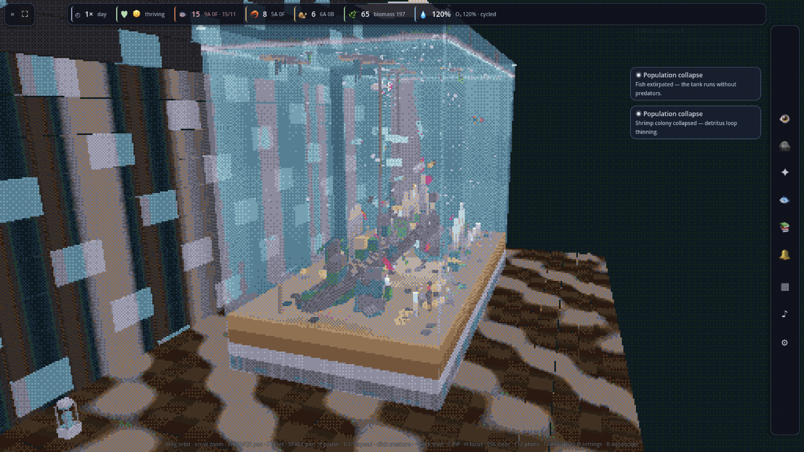
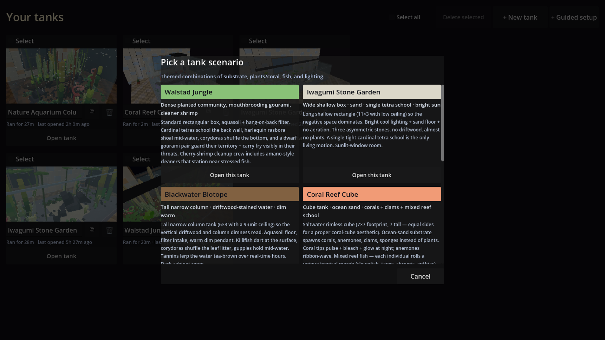
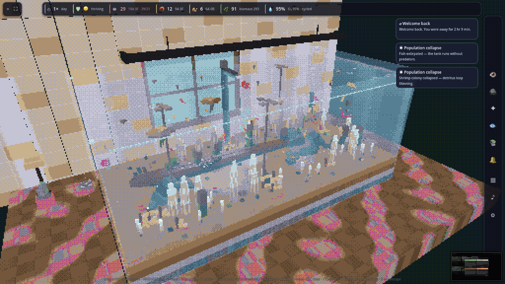
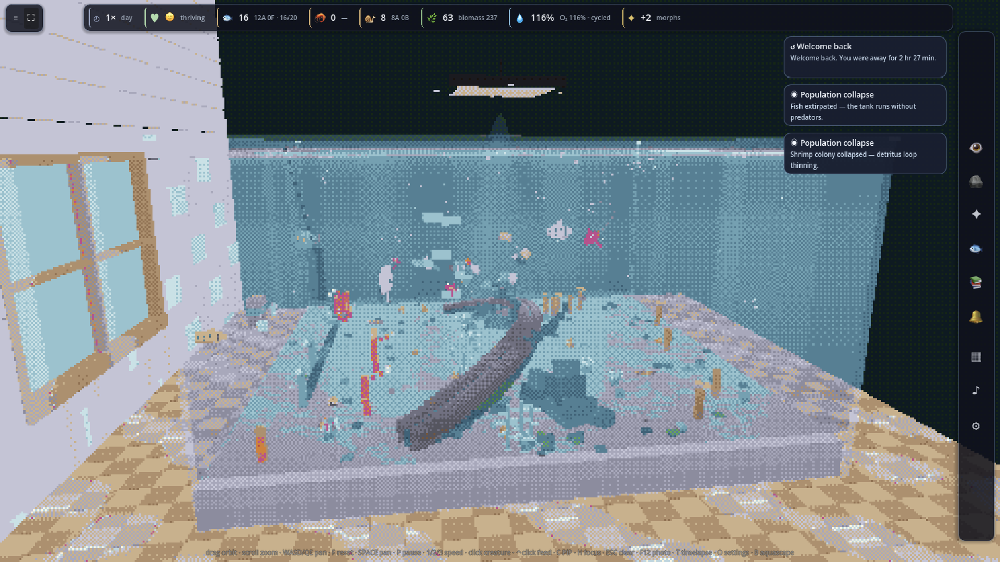
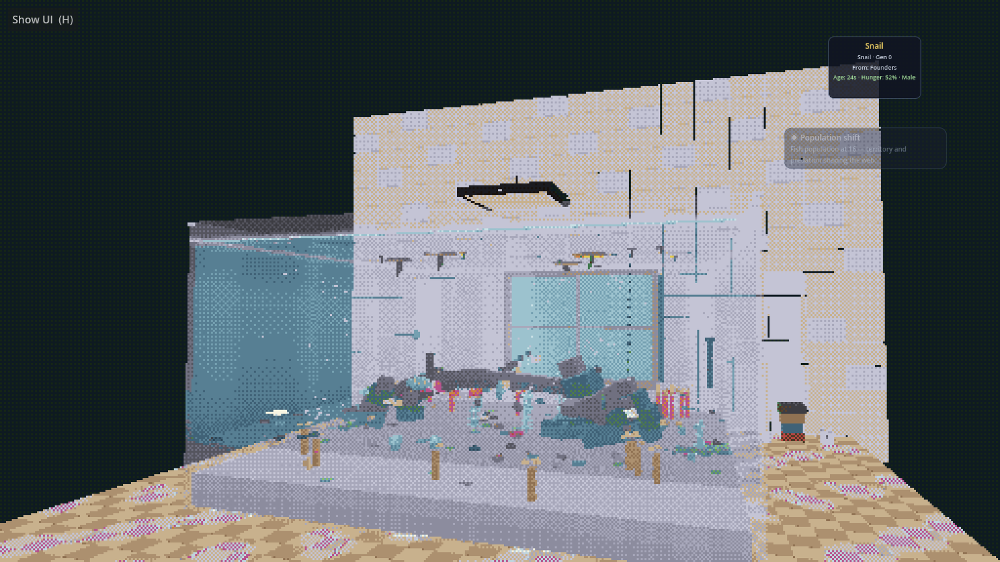

Stability hotfixes
Tanks open reliably again — no silent crash when the Guardian speaks on first load. Snail predator scans no longer touch freed fish. Non-finite transforms self-recover instead of flooding the console.
A generative pixel-art aquarium. 3D voxel scene → palette-quantize + dither → chunky 48-color pixels. Plants grow voxel by voxel, fish school and breed, shrimp molt, snails crawl the glass. The whole thing self-balances over a few minutes of watching.
Latest release · v0.2.21 — download

Tanks open reliably again — no silent crash when the Guardian speaks on first load. Snail predator scans no longer touch freed fish. Non-finite transforms self-recover instead of flooding the console.
Build hardscape voxel-by-voxel: place stone, wood, and substrate blocks, flood-fill regions, and get composition coaching as your scape takes shape. Grazing surfaces accrue biofilm for snails and shrimp.
Switch to an overhead pond camera for a different read on the tank. Music choreography drives planar formations — spirals, mandalas, kicklines — when a track is playing.
Guardian and fish inner-life layers: episodic memory, deliberation, journal entries, and template or local-LLM voice. macOS uses template Guardian lines until on-device inference is stable.
Every plant builds itself voxel by voxel over real time, fed by a nutrient field under the substrate. Six leaf forms (paddle, ribbon, lance, needle, column, moss). Vallisneria sends out horizontal runners that root into daughter plants. Cryptocorynes melt under low light and regrow from the rhizome.
Each fish has a heritable genome — body shape, fin length, color, swim pattern, mouth orientation, eye size, tail fork depth. Lineages drift over generations into visible morphs. Tetras school, angelfish hover and brood their eggs, guppy males flare for females, livebearer females release free-swimming fry instead of laying eggs.
Closed nutrient loop: plants ← substrate ← waste ← creatures. Shrimp graze plant tips and snap at fry. Snails crawl glass and clear detritus. Fish defecate. Bettas hunt shrimp. Algae blooms when nutrients spike. Auto-balances over a few minutes.
A 6-minute day/night cycle drives plant photosynthesis (visible O2 pearling), fish activity (cory species nocturnal, schoolers diurnal), and surface gulping when oxygen drops too low.
Switch the preset and the tank turns into a saltwater reef: ocean-sand substrate, four coral morphs (branching staghorn, brain dome, table, soft feathery), a mixed school of tropical fish where every individual rolls a unique morph at spawn, marine snails (turbo, trochus, nassarius), and skunk cleaner shrimp that set up cleaning stations.
Internal sim runs at full 3D continuous. The render pass quantizes to chunky pixels and a 48-color palette via a custom GDShader. Animation emerges from physics, not keyframes — every tail wag, every wall-bounce, every settle is calculated.
Tap + New tank in the game to open the scenario picker — eight curated themes that each combine a distinct tank shape, substrate, lighting, and stocking. Every scenario produces a visibly different silhouette of glass, not just a different fish mix.

Dense planted community: cardinal tetras, harlequins, cory, mouthbrooding gourami pair, cleaner shrimp.
Sand + bright sun + a single tetra school over almost-empty negative space.
Tall narrow tank, driftwood-stained warm water, killifish + cory + guppy.
Saltwater reef: corals, anemones, clams, mixed reef morphs. Coral tips pulse and glow at night.
Hexagonal show tank — angelfish + gourami pairs defend wedges of floor.
No fish — cherry shrimp colony, freshwater hydra polyps, filter-feeding clams.
Tall planted column with every behavior on display at once.
Cozy dim tank — betta + dwarf puffer contest opposite corners.
Tanks can float in the void, sit on a bedroom desk, or frame a sunny window. Lighting, fog, and post-process all quantize through the same 48-color palette.



Download walstad-loom-mac.zip, unzip, then right-click → Open → Open in the Gatekeeper dialog. The app is ad-hoc signed but not Apple-notarized.
If macOS says "WalstadLoom.app is damaged and can't be opened" (Chrome quarantine bug), open Terminal and run xattr -dr com.apple.quarantine ~/Downloads/WalstadLoom.app, then double-click again.
Download walstad-loom-windows.zip, unzip, double-click WalstadLoom.exe. SmartScreen will warn that the publisher is unknown — click More info → Run anyway.
Download walstad-loom-linux.tar.gz, then:
tar -xzf walstad-loom-linux.tar.gz
./WalstadLoom-linux.x86_64Tested on Ubuntu / Debian. Exec bit already set.
Download walstad-loom.apk to your device. Tap the downloaded file and follow the prompts to install.
You may need to enable Install from unknown sources in Settings → Security. Requires Android 8.0+.